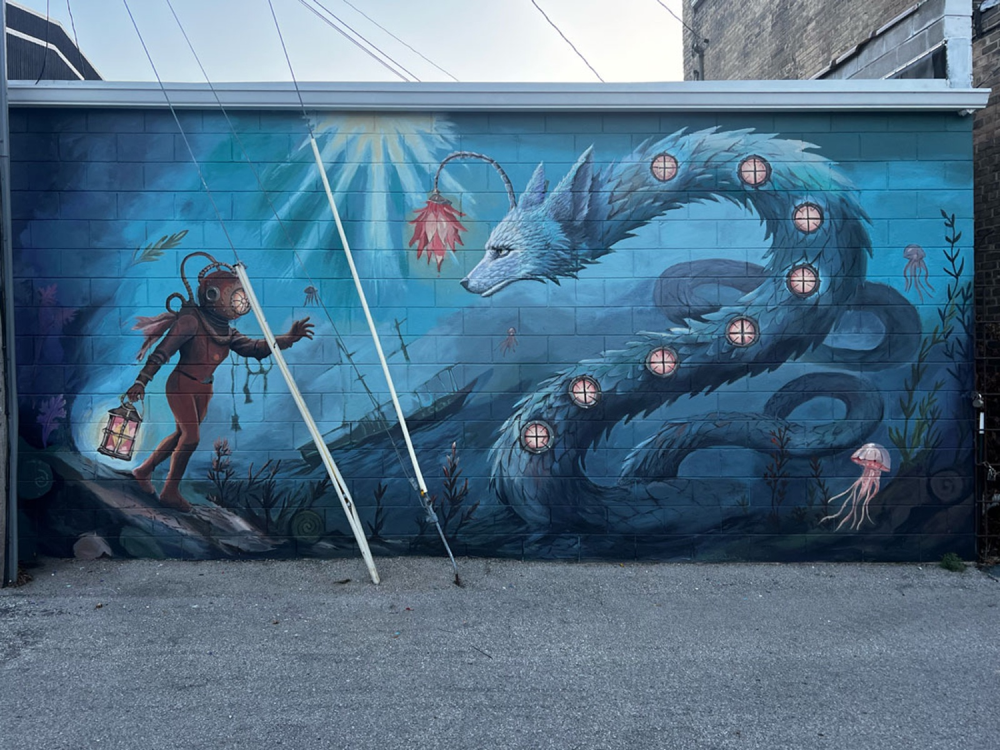
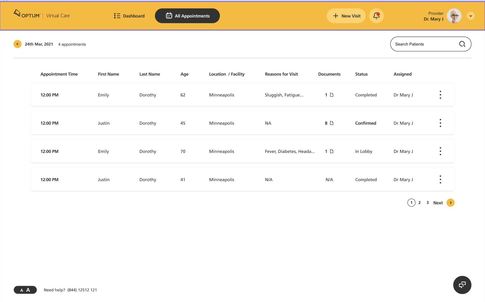
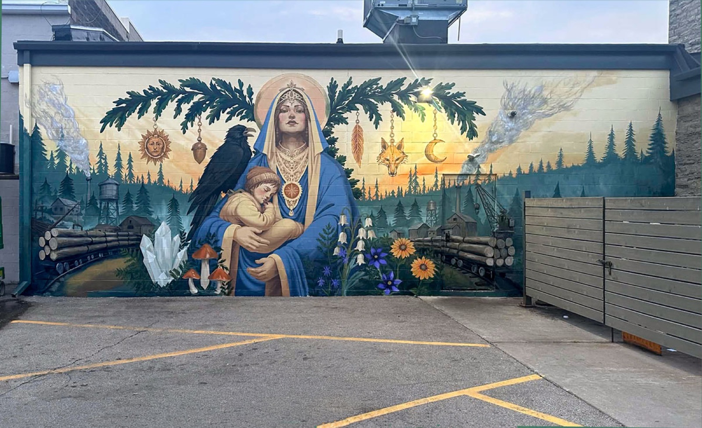
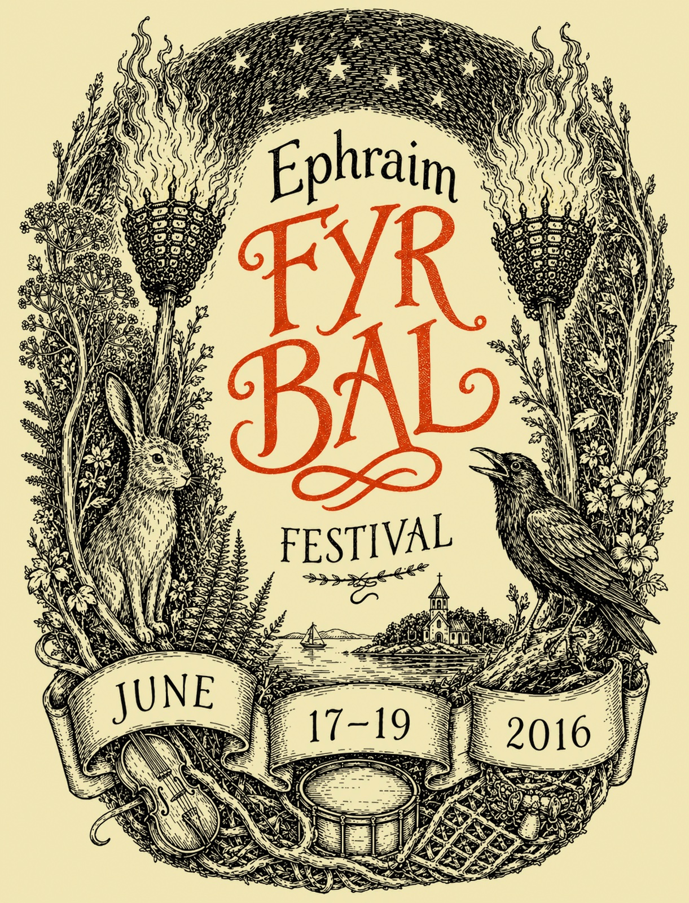
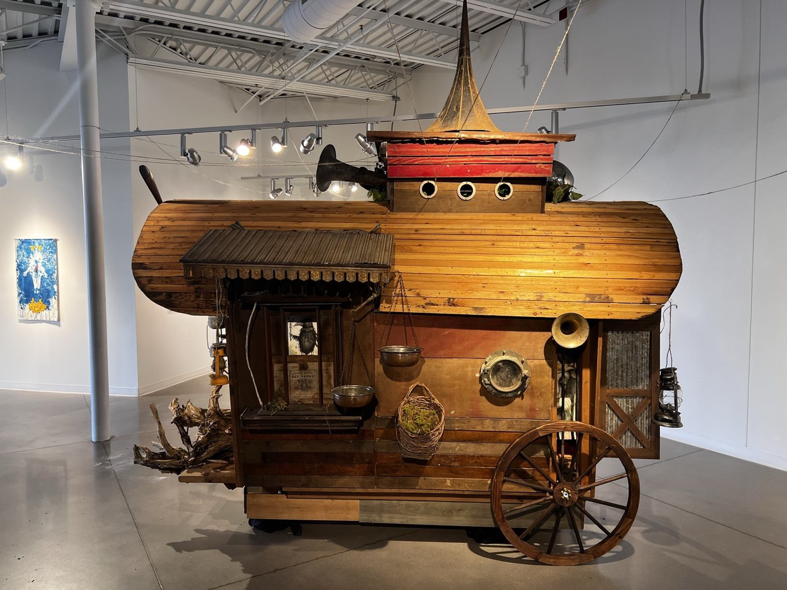
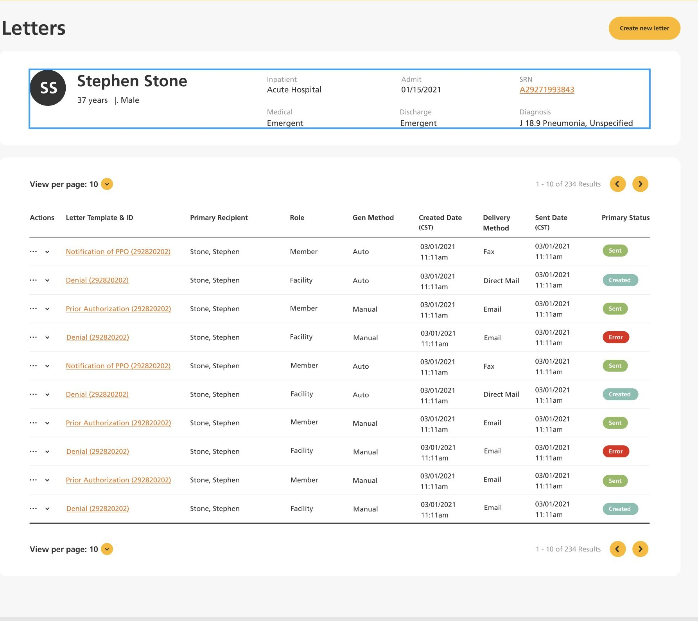
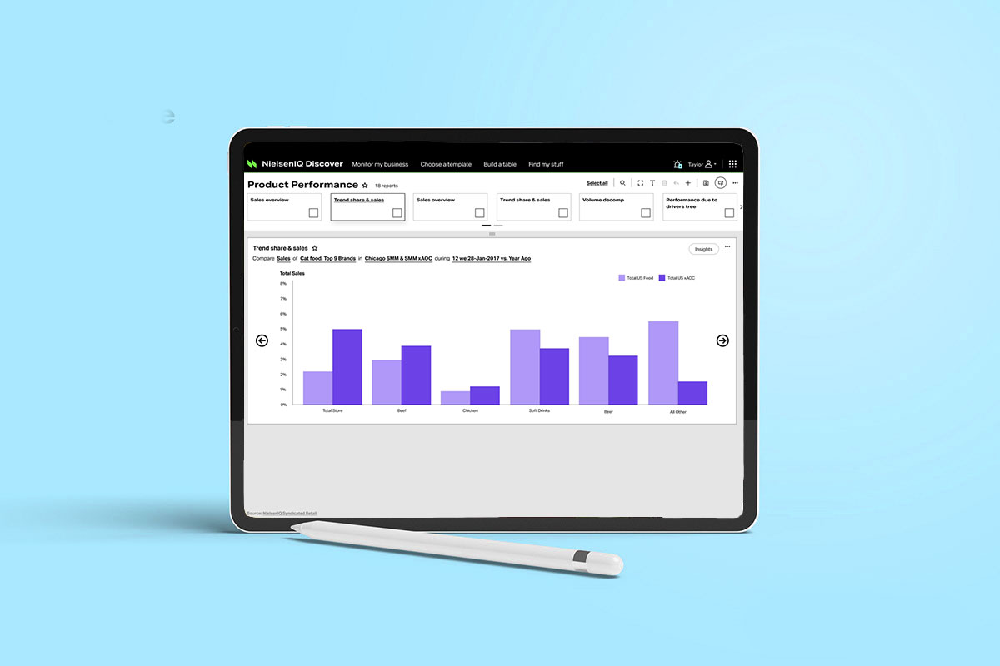
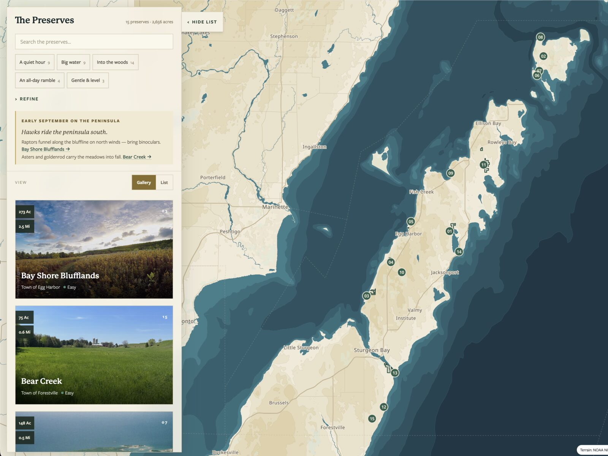
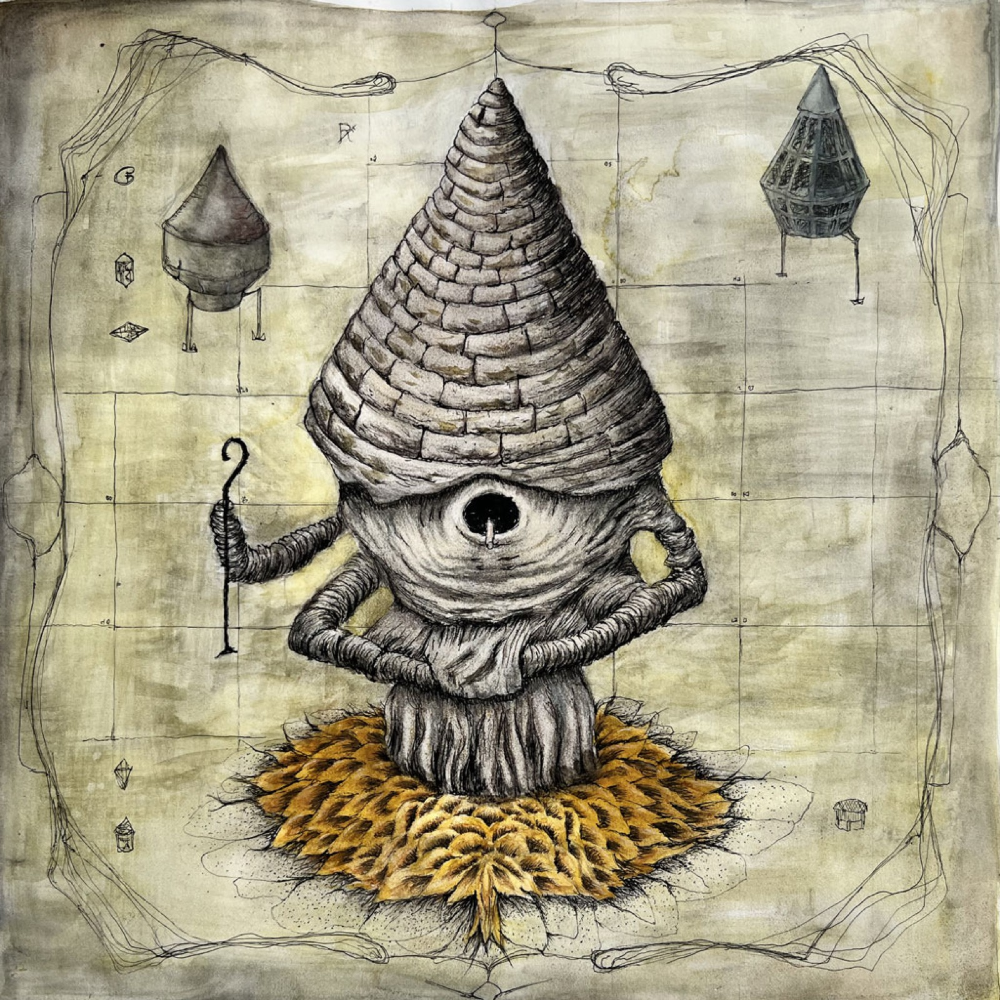

A kid looking up at a wall and a nurse opening a care plan meet the work the same way: cold, with no one there to explain it. For twenty-five years I've designed for that moment.

A district's lumber-mill story, researched from an 1850s lithograph and painted 600 square feet wide.

Hand-lettered title and engraving-weight illustration in one frame.

A life-sized field naturalist's wagon.
All murals & art →
Personas, design system, and product UI for nurses and care coordinators.

Design system, IA, guided flows, and dashboard UI.

Hand-authored cartography for 15 preserves, no map vendor renting access to the land.
All case studies →
Invented maps, assemblage, and machines built from a farm coming apart.
Enter →